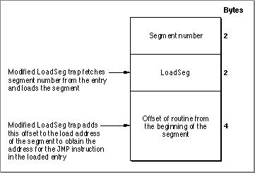
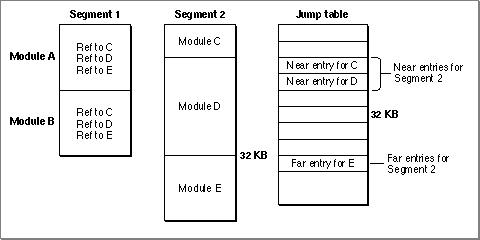
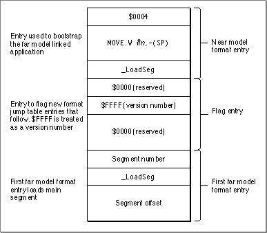

Legacy Document
Important: The information in this document is obsolete and should not be used for new development.
Important: The information in this document is obsolete and should not be used for new development.


The Far Model Jump Table
Compilation and linking with the option-model farresults in a change in the format of the jump table and a change in the format of unloaded entries.
Figure 10-8 shows the unloaded jump table entry for a routine in a segment that is linked using the far model. As you can see, the modified entry omits the instruction that puts the segment number on the stack. The 2 bytes saved are then used to store the larger 4-byte offset that locates the routine within the segment. The Segment Manager gets the segment number from the entry itself and loads that segment.
- Because a segment can be larger than 32 KB, 4 bytes are required to describe the offset of a routine from the beginning of its segment. As the model near unloaded entry for a routine allowed only 2 bytes to specify the offset of the routine, this requires a change in the unloaded format of jump table entries.
- Because segments compiled with the option
-model nearcan be linked with segments compiled with the option-model far, jump-table entries for the same segment are not necessarily contiguous.
Figure 10-8
Far model unloaded jump table entry
In the standard near model jump table, entries for routines in the same segment are stored contiguously. In a jump table created for a program linked under the far model, entries for routines in the same segment might not be contiguous. Consider the case shown in Figure 10-9. When the linker builds segment 1 and segment 2, it places code compiled with
-model nearwithin the first 32 KB and code with-model farbeyond the 32 KB limit.When the jump table is built, the linker places near-referenced entries within the first 32 KB; far-referenced entries are placed after all near references. Thus near and far references for the same segment can be stored in different areas of the jump table. In Figure 10-9, the entry for
ModuleEis not contiguous with near entries for the other modules contained in segment 2.Figure 10-9 Separation of near and far references in the far model jump table

The format of the jump table built for programs linked under the far model is different from that for programs built under the near model. Figure 10-10 shows the format of the far model jump table.
Figure 10-10 The far model jump table structure

The first entry in the jump table is a near model format entry used to load a segment that patches the
_LoadSegtrap, segment n. The next entry is an entry used to flag the far model format jump table. The third entry is a far model format entry. Remember that what's different about it affects only the information stored for its unloaded state. This third entry is used to load segment 1, which is the segment containing the program's main entry point.